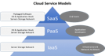
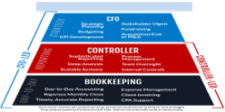
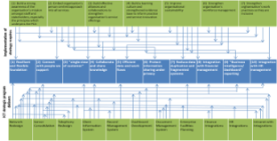
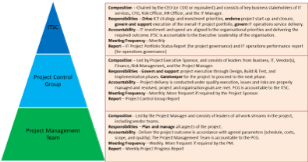

1. Strategy Development
Provided advice and guidance to CEO and Executive Leadership team in their strategic planning cycle to unpack and allocate the growth targets (~$20m) across focus areas and business divisions. Reviewed and recommended approach to manage the strategic execution to enhance effectiveness and increasing impact to the communities served.

2. Operational and Financial Sustainability
Worked with CEO and CFO to identify and prioritise operational and financial areas. Threats to ‘going concern’ sustainability were investigated and recommendations for alleviation made in a report for the CEO and Board to consider. Assisted with risk register and treatment of behavioural issues. CEO management coaching.

3. Business Project Conception and RFP Process
Supported customer in the strategic migration of infrastructure and applications to a hosted solution. Guided and assisted in the issued RFP, responses and selection of the final service provider. Guided and assisted in the implementation of the changed environment including re implementation of application modules.

4. Business Capabilities and Disciplines
Giving advice and guidance in conceptualising Business processes review and introducing Business Intelligence and developing management dash board to plug gaps in loss making Business operation areas.
Introducing commercial disciplines such as developing Business cases to justify investments to introduce new products and/or Systems.

5. Strategic Initiative
Advice and support client’s key strategic initiative (strategic investment in early learning centre) from concept to execution. ATS participates as a key member of the client’s executive team. ATS is able to complement client executive team in areas of strategic thinking, commercial/contractual disciplines, governance and planning.

6. Financial Management Ownership Assessment
Conducted a management review of the ownership of major financial decisions and processes. Provided a report on recommendations to support the organisation’s growth strategy of 50% growth to the CEO. Conducted report briefing to CEO and Executive Leadership team.

7. Business and Systems Transformation
Supported client in developing and implementing their Core Business Transformation and Systems program. Scope included the replacement of the Customer Management System, Payroll and Staff Scheduling Systems (distribution and fulfilment), introduction of Risk and Problem management, integration with Business Intelligence, HR and Security systems. Advised on significant change management, including business processes, staff training, quality assurance, business operations, and project management.

8. Validation of Business and ICT Strategy Alignment
Conducted a review jointly with the customer on their business strategy and initiatives, and their ICT strategy and the 3-year plan. The purpose was to validate the extent of strategy alignment, and to make the necessary refinement of the ICT plan to ensure it would support implementation of the business strategy and initiatives.

9. IT Service Operations Improvement
Conducted a SWOT analysis jointly with the customer, using an IT Service Operations framework. Based on the results of SWOT analysis, and the organisation’s needs and priorities, an implementation plan for improvements and strengthening of IT Service Operations was adopted and committed by the organisation. ATS continued to support the customer on the implementation of monitoring of the outcome.
10. Target State Operating Model
Guided and supported the customer to develop a target state operating model of their core business prior to issuing the RFP to acquire a new core system. The model provide s a comprehensive view of how the organisation will operate using the new system.

11. Project Delivery and ICT Governance Framework
Recommended and supported the customer to Implement a 3-tier project delivery and ICT governance framework. All IT projects and services in the organisation are managed and governed consistently under this framework. ATS team continues to be a member of the steering committee.
